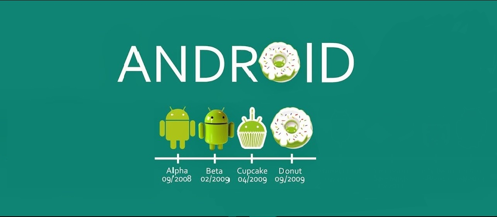

História e Versões do Android

Android é um sistema operacional móvel lançado inicialmente com a versão alpha em novembro de 2007, em seguida a segunda versão comercial e estável, o Android 1.0, foi lançado em setembro de 2008.
Está em constante desenvolvimento pela empresa Google e a organização Open Handset Alliance, e o sistema operacional recebeu uma série de atualizações desde o seu lançamento original. Essas atualizações geralmente corrigem erros e adicionam novas funcionalidades.
Desde abril de 2009, as versões Android foram desenvolvidos sob um codinome e lançadas em ordem alfabética: Alpha, Beta, Cupcake, Donut, Eclair, Froyo, Gingerbread, Honeycomb, Ice Cream Sandwich, Jelly Bean, KitKat, Lollipop, Marshmallow, Nougat, Oreo e Pie.
Além disso, a partir do Android 1.5 (Cupcake), lançado em 30 de abril de 2009, foram lançados apenas versões com nomes de doces. A Google também coloca uma estátua em sua sede, ao lançamento de cada versão, em que o famoso "robôzinho" está acompanhado do doce, a qual a versão Android se refere.
Versões de pré-lançamento comercial
Android alpha
Houve ao menos dois lançamentos internos dentro do Google e da Open Handset Alliance antes de o Android Beta ser lançado em novembro de 2007. Em um esquema temporário de nomenclatura, o segundo desses lançamentos foi chamado "R2-D2". Dan Morril criou alguns dos primeiros mascotes, mas o atual logotipo verde do Android foi desenhado por Irina Blok. Ryan Gibson concebeu o esquema de nomenclatura que foi usado pelos lançamentos públicos majoritários, iniciando com o Android 1.5 "Cupcake" em Abril de 2009.
Android beta
O Android beta foi lançado em 5 de novembro de 2007, enquanto o kit de desenvolvimento de software (SDK) foi lançado em 12 de novembro de 2007. Dia 5 de novembro é a data em que popularmente se comemora o aniversário do Android. As versões beta públicas do SDK foram lançadas na seguinte ordem:
- 16 de novembro de 2007: m3-rc22a
- 14 de dezembro de 2007: m3-rc37a
- 13 de fevereiro de 2008: m5-rc14
- 3 de março de 2008: m5-rc15
- 18 de agosto de 2008: 0.9
- 23 de setembro de 2008: 1.0-r1
Versões por nível de API
Android 1.0 - Alpha (API Nível 1)
Android 1.0 é a primeira versão comercial do sistema, lançada em 23 de setembro de 2008, baseado no Kernel Linux de versão 2.6.25. O HTC Dream é o primeiro dispositivo com este sistema operacional móvel como padrão de fábrica, lançado em outubro de 2008. Incorporou as seguintes características do Android 1.0:
Versão: 1.0 - Alpha
API: 1
Data de Lançamento: 23 de setembro de 2007
Características;
- Aplicação Android Market realiza download e atualiza aplicativos através do aplicativo Market;
- Navegador Web para exibir, dar zoom e suporte total a páginas em HTML e XHTML - múltiplas páginas são mostradas em janelas ("cards");
- Suporte a câmara - entretanto, nesta versão faltavam opções de alterar a resolução da câmara, balanço branco, qualidade, etc.
Android 1.1 - Beta
Em 9 de fevereiro de 2009, a atualização Android 1.1 foi lançada, inicialmente para o HTC Dream. A atualização mudou a API e acrescentou uma série de características:
Versão: 1.1 - Beta
API: 2
Data de Lançamento: 9 de fevereiro de 2009
Características;
- Atualização da API. A atualização da API identifica se o aplicativo a ser instalado é compatível com o sistema, antes de instalar;
- Adiciona suporte para letreiros em layouts;
- Adiciona comentários e mais detalhes quando um usuário faz uma busca no Google Maps;
- Adiciona suporte para salvar anexos de mensagens;
- Na chamada padrão, o tempo de limite da tela agora é maior quando usando a viva voz;
- Abreviações: API - Application Programming Interface (interface de programação de aplicativos).
Android 1.5 - Cupcake
Em 30 de abril de 2009, a atualização Android 1.5 foi lançada, com base no kernel Linux 2.6.27. Esta foi a primeira versão a usar oficialmente um nome baseado em um doce, um tema que seria usado para todas as versões seguintes. A atualização inclui vários novos recursos e alterações de interface do usuário:
Versão: 1.5 - Cupcake
API: 3
Data de Lançamento: 30 de abril de 2009
Características;
- Suporte para teclados virtuais de terceiros com previsão de texto e dicionário para palavras personalizadas do usuário;
- O suporte para Widgets - vistas de aplicativos em miniatura, que pode ser embutido em outras aplicações (como a tela inicial) e receber atualizações periódicas;
- Gravação e reprodução de vídeo em MPEG-4 e 3GP;
- Auto-emparelhamento e suporte para Bluetooth estéreo acrescentado (A2DP e AVRCP);
- Recursos de copiar e colar adicionado ao navegador web;
- Fotos dos usuários mostrado para Favoritos em Contatos;
- Carimbo de data / hora específico mostrado para eventos em log de chamadas e acesso com um toque a um cartão do evento log de chamadas;
- Animações de transições de tela;
- Auto-rotação da tela;
- Animação ao iniciar (boot).
Android 1.6 - Donut
Em 15 de setembro de 2009 o Android 1.6 SDK - apelidado de Donut - foi lançado, baseado no kernel Linux 2.6.29. Foram incluídos na atualização vários novos recursos:
Versão: 1.6 - Donut
API: 4
Data de Lançamento: 15 de setembro de 2009
Características;
- Suporte para resoluções de tela (320×240 e 800×480);
- Interfaces para a programação de aplicativos com reconhecimentos de gestos;
- API de programação para uso de “text-to-speech”;
- Caixa de pesquisa rápida na parte superior da tela inicial, que irá arrastar seus “bookmarks”, histórico do navegador e contatos.